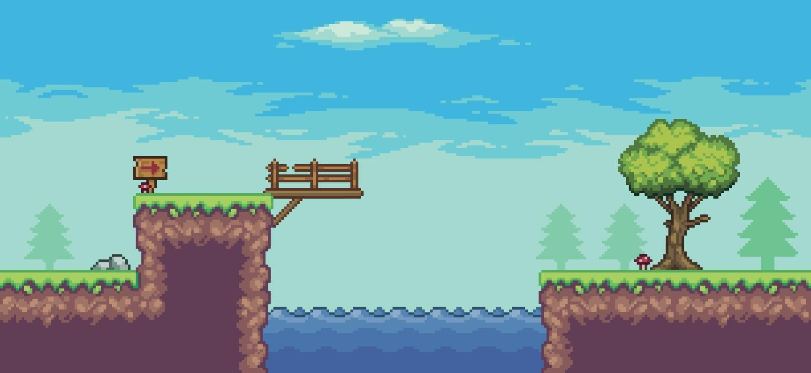
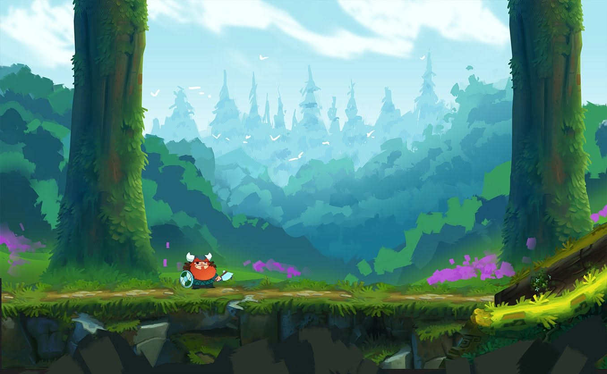
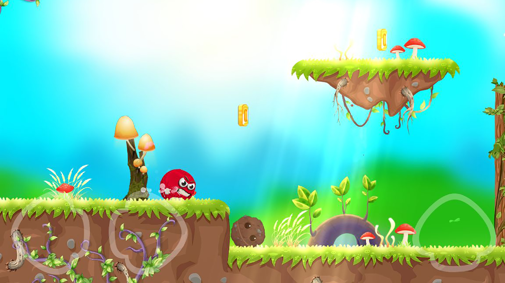
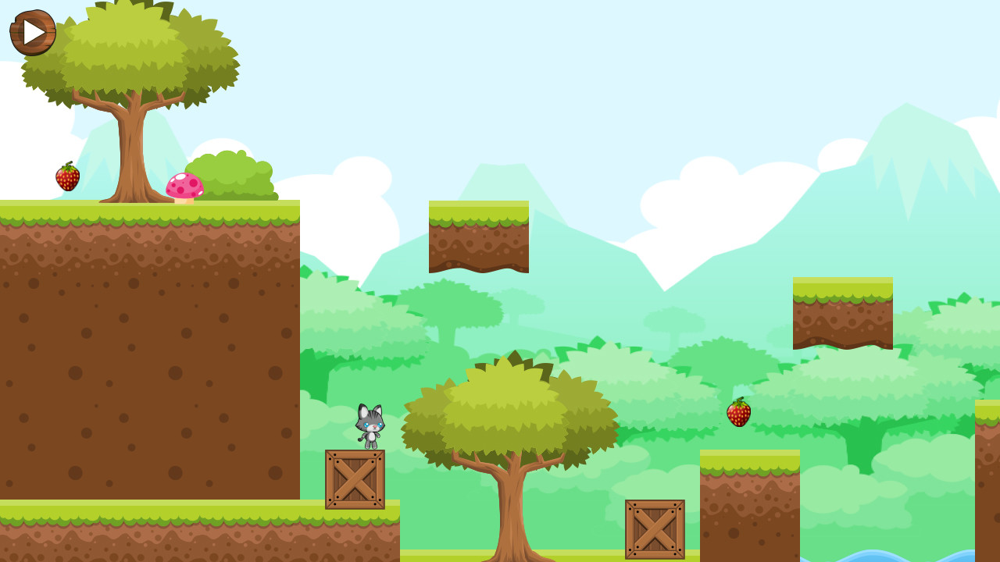

<div class="item_menu_horizontal">
    <h1>Menu de Fases</h1>
</div>

<nav id="fases">
    <div class="fase" id="fase_1" onclick="window.location.replace('/AQP_game/?fase=1');">
        
    </div>
    <div class="fase" id="fase_2" onclick="window.location.replace('/AQP_game/?fase=2')">
        
    </div>
    <div class="fase" id="fase_3" onclick="window.location.replace('/AQP_game/?fase=3')">
        
    </div>
    <div class="fase" id="fase_4" onclick="window.location.replace('/AQP_game/?fase=4')">
        
    </div>

    <button class="fechar resetador" style="margin-bottom: auto;">repetir fase</button>
</nav>
